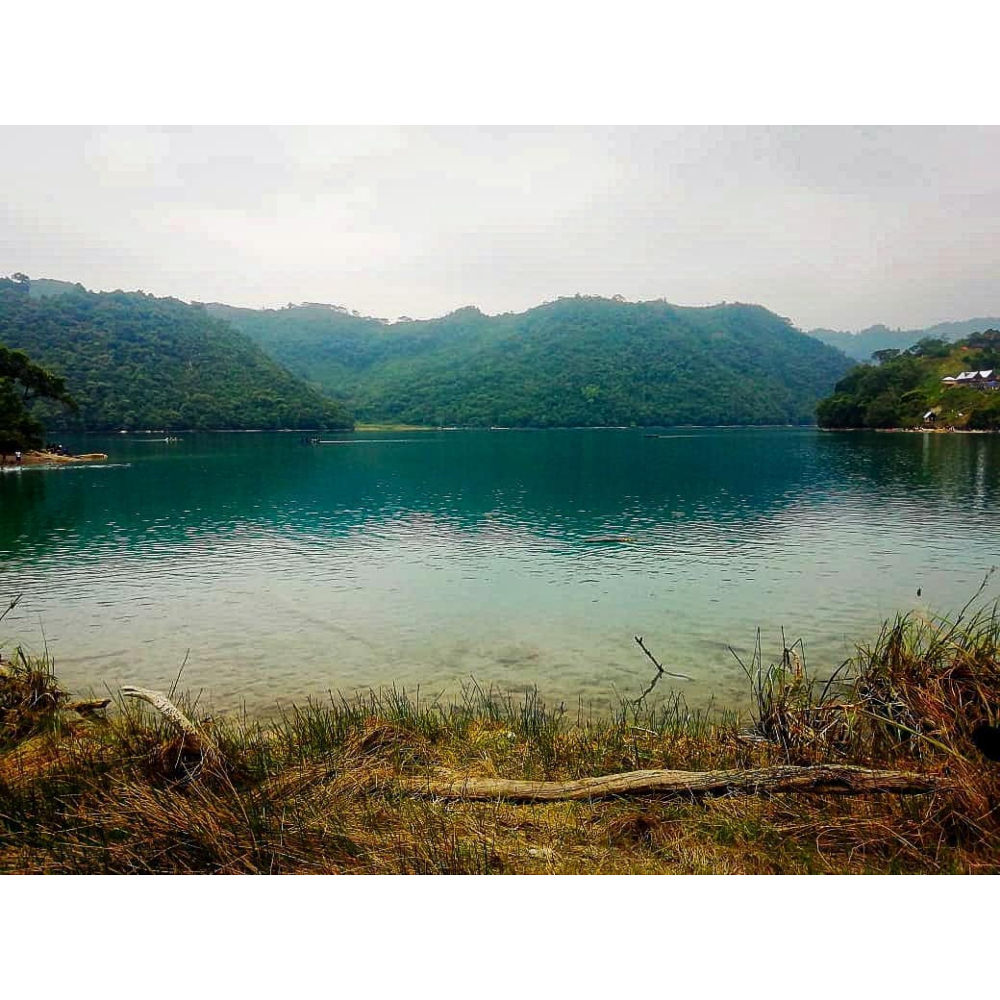
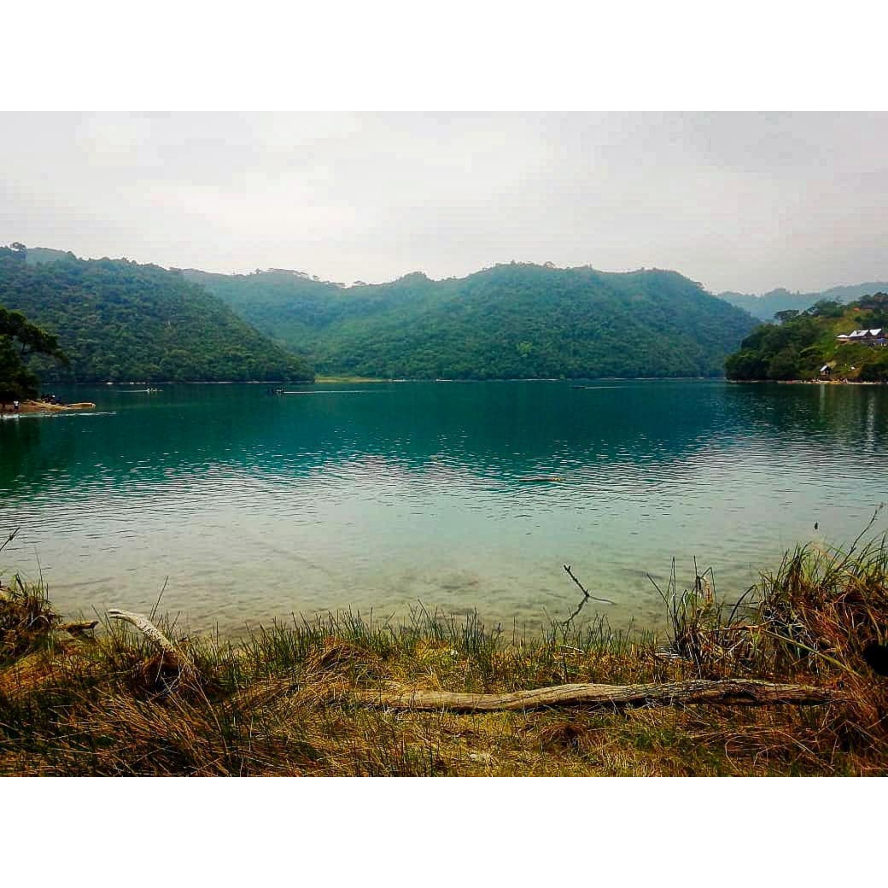

Guatemala, tierra de volcanes, maravillas y magia...
y fui como un herido por las calles hasta que comprendí que había encontrado, amor, mi territorio de besos y volcanes. SONETO V - Pablo Neruda
y fui como un herido por las calles hasta que comprendí que había encontrado, amor, mi territorio de besos y volcanes. SONETO V - Pablo Neruda

Es un gusto darte la bienvenida a nuestra página, la cual es una amplia guía de destinos e información relevante que brinda al guatemalteco lo indispensable para programar viajes a los diferentes atractivos naturales y culturales del país. La naturaleza y la cultura se integran para brindar experiencias únicasa todos aquellos que les encanta recorrer las maravillas del país. Reservas naturales, volcanes, entre muchos otros, hacen que la visita a los destinos turísticos de las siete regiones turísticas de Guatemala sea irrepetible.
Los volcanes son fenómenos naturales mágicos. No obstante, el atractivo turístico de estos fenómenos naturales no solo reside en su belleza y en la simple observación, sino que, además, ofrece un sinfín de posibilidades para quienes lo visitan. Todo depende de las características geográficas del volcán y el estado en el que se encuentra al momento de realizar la visita. Te permiten sentir el poder de la naturaleza de la forma más extrema posible.
Como otros entornos naturales, la visita a los volcanes de Guatemala te permite disfrutar de una larga caminata en contacto con la naturaleza. Algunas rutas de acceso son más largas que otras, por lo que podrás hacer senderismo o trekking, si lo prefieres, para llegar al destino final.
Asegúrate de tener el equipamiento adecuado, así como las condiciones físicas que se requieren en determinados enclaves.
Por ello, si estás preparando tu viaje para disfrutar de los volcanes de Guatemala, te invitamos a navegar por nuestra web.
 
